Activity: Use model edges in sketches
Try this activity to learn how you can use the  Project to Sketch command to include edges from part faces in your sketch.
Project to Sketch command to include edges from part faces in your sketch.
Click here to download the activity file.
Start Solid Edge.
On the File menu, click Open.
In the Open File dialog box, set the Look in: field to the folder where the training files reside.
Click sketch_B.par and then click Open.
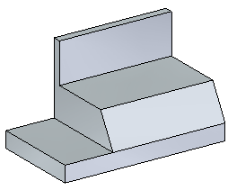
On the Home tab→Planes group, choose Coincident Plane.
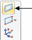
Select the part face shown.
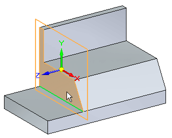
Click the primary axis on the graphic move handle.
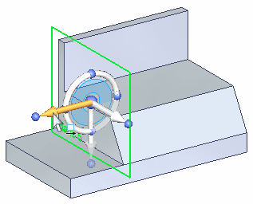
In the distance edit box, type 20.
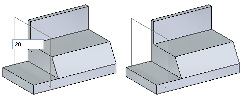
You will use edges of the part in the sketch. On the Sketching tab→Draw group, choose Project to Sketch. The command requires a locked plane.
Lock the sketch plane. Pause over the sketch plane created earlier and then click the lock. Dismiss the Project to Sketch Options dialog.
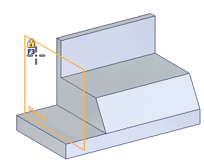
Select the edges shown.
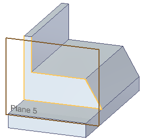
Notice how these edges project to the locked sketch plane.
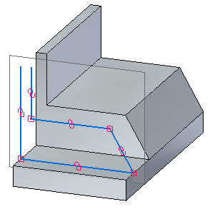
Display PMI dimensions. In PathFinder, click the Dimensions check box.
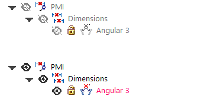
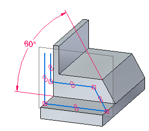
Click the 60° value on the dimension.
Change the dimension (any value between 45° and 75°) and notice how the edge that was projected to the sketch plane follows the angle of the face. Make sure the direction arrow on the dimension matches the illustration. You can change the direction by clicking the arrow buttons in the dynamic edit box.
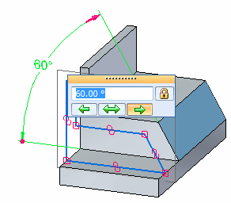
Set dimension to 60° and turn off the PMI dimension display.
Add and modify sketch geometry.
Orient the sketch plane normal to the view. On the View tab→Views group, choose Sketch View (or press Ctrl+H).
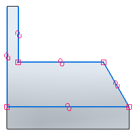
Draw the sketch geometry as shown. Segment lengths and location are not important.
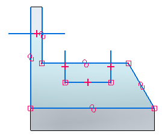
Trim line segments. On the Sketching tab→Draw group, choose Trim .
Click and drag the cursor over the line segments shown.
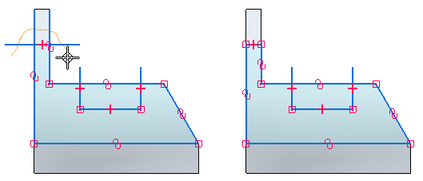
Click and drag the cursor over the three line segments shown.
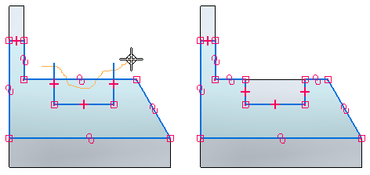
Turn off the Relationship Handles display.
Switch to an isometric view. Type Ctrl+I.
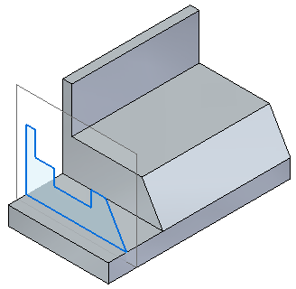
Close the file and do not save.
In this activity you learned how to draw a sketch on a reference plane and how to include edges from part faces. You observed sketch associativity to part model edges and used the Sketch View command.
Click the Close button in the upper-right corner of the activity window.